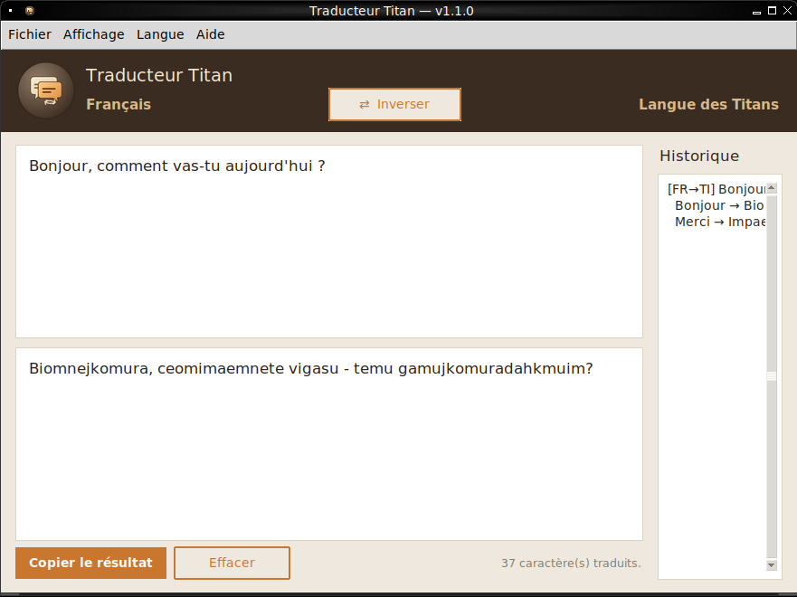
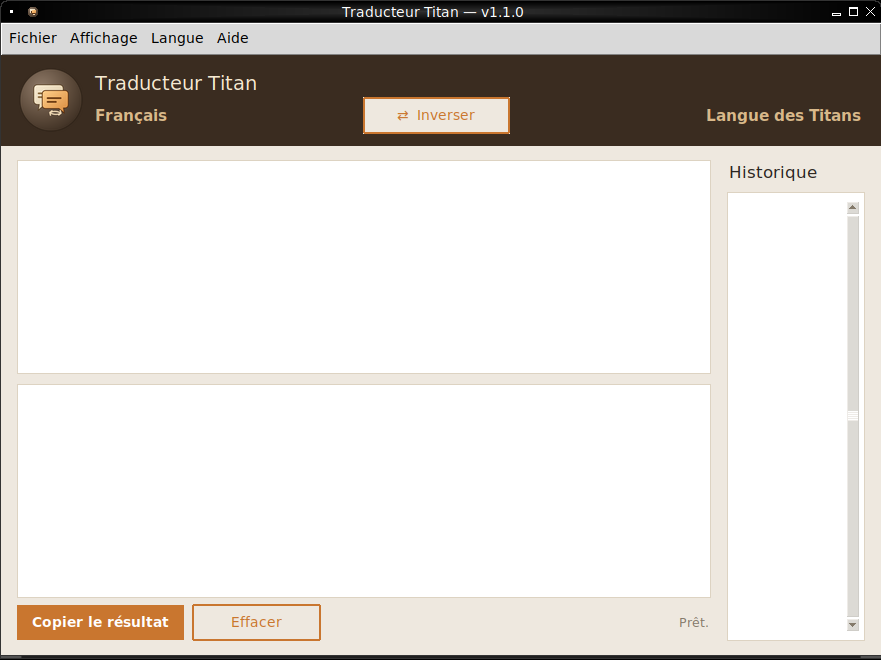
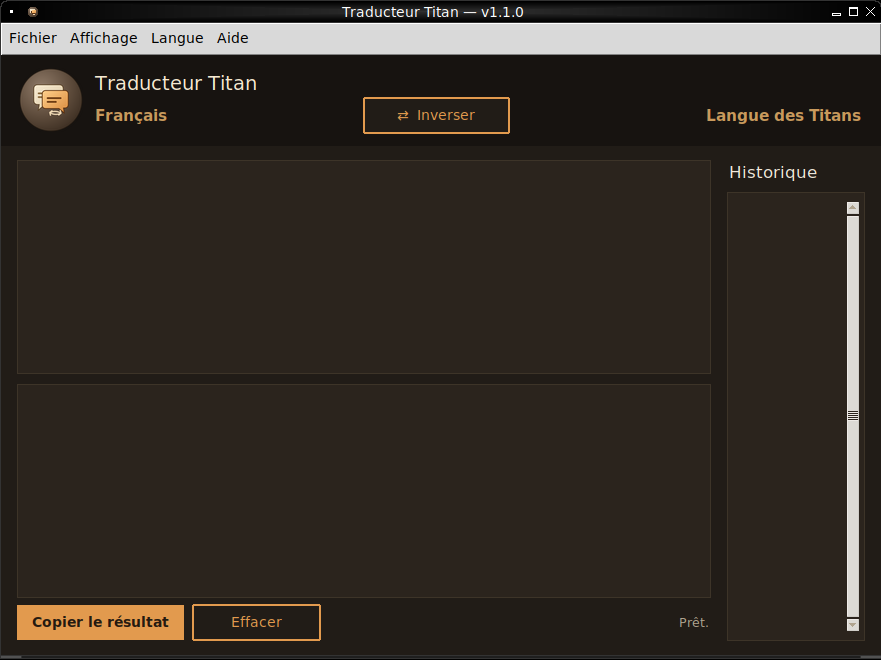

Application de bureau — Windows
Traducteur JDR traduit vos textes vers des langues inventées — la langue des Titans, et toutes celles que vous graverez vous-même — dans les deux sens, en temps réel.
Gratuit. Installation en un clic, sans compte ni connexion requise.

Bibliothèque de langues
Chaque langue est un fichier chiffré indépendant. Utilisez celles fournies, ou gravez la vôtre avec l'outil inclus — aucune installation supplémentaire.
Substitution phonétique lettre par lettre. Fournie par défaut.
Traduction mot à mot, vocabulaire propre. Fournie en démo.
Créez et chiffrez votre propre langue avec l'outil fourni.
Fonctionnalités
Le résultat s'affiche au fil de la frappe, dans les deux sens, avec un bouton pour inverser.
Chaque fichier de langue (.titanlang) est chiffré en AES : le vocabulaire n'est pas lisible en clair.
Vos traductions sont retenues d'une session à l'autre, exportables en fichier texte.
L'interface s'adapte à vos préférences, à tout moment, depuis le menu Affichage.
Aperçu

Thème clair

Thème sombre
Installation
Un seul fichier .exe, avec la bibliothèque de langues déjà incluse.
Choisissez le dossier d'installation et, si vous le souhaitez, un raccourci sur le Bureau.
L'application se lance, prête à l'emploi, avec toutes les langues déjà chargées.
Télécharger
Installeur complet avec licence, choix du dossier et raccourci Bureau optionnel.
Télécharger le .exePas encore disponible en paquet prêt à l'emploi pour le moment.